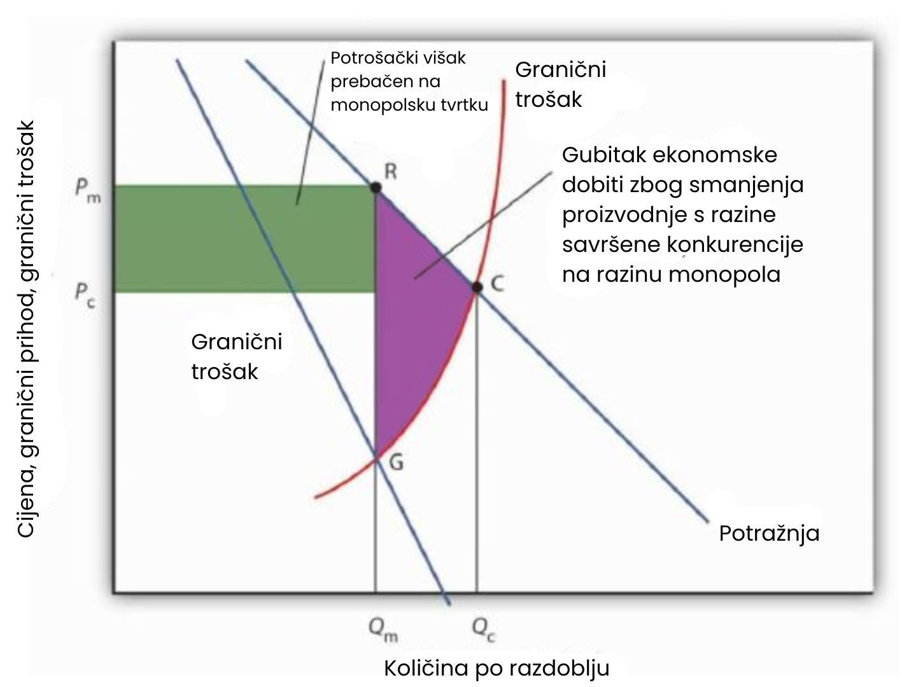

Procjena monopola
Vidjeli smo da u slučaju monopola koji nastoji maksimizirati dobit ishod odstupa od onoga u uvjetima savršene konkurencije. No, je li to važno za društvo? U ovom ćemo se dijelu usredotočiti na razlike koje proizlaze iz tržišne strukture i analizirati njihove posljedice.
Učinkovitost, pravednost i koncentracija moći
Monopol poduzeće određuje količinu proizvodnje tako da izjednači granični trošak s graničnim prihodom. Nakon toga određuje cijenu po kojoj može prodati tu količinu, a ta je cijena određena krivuljom potražnje. Budući da cijena premašuje granični prihod, ona premašuje i granični trošak. To je u suprotnosti sa savršenom konkurencijom, gdje su cijena i granični trošak jednaki. Viša cijena koju monopol može naplatiti omogućuje mu ostvarivanje dobiti — u velikoj mjeri na račun potrošača, čije su mogućnosti ograničene i koji često nemaju izbora. Takvo rješenje u slučaju monopola stoga otvara pitanja učinkovitosti, pravednosti i koncentracije ekonomske moći.
Monopol i učinkovitost
Činjenica da cijena kod monopola premašuje granični trošak ukazuje na to da monopolno rješenje krši temeljni uvjet ekonomske učinkovitosti da cjenovni sustav mora donositeljima odluka jasno pokazivati sve troškove i sve koristi njihovih izbora. Učinkovitost zahtijeva da se potrošači suočavaju s cijenama koje su jednake graničnim troškovima. Budući da monopol naplaćuje cijenu veću od graničnog troška, potrošači će konzumirati manju količinu monopolskog dobra ili usluge nego što bi bilo ekonomski učinkovito.
Kako bismo usporedili učinkovitost savršene konkurencije s neučinkovitošću monopola, zamislimo industriju u savršenoj konkurenciji čije je rješenje prikazano na slici. Kratkoročna krivulja ponude industrije predstavlja zbroj pojedinačnih krivulja graničnih troškova i može se promatrati kao krivulja graničnih troškova za cijelu industriju. Savršeno konkurentna industrija postiže ravnotežu u točki C, pri cijeni Pc i količini Qc.
S obzirom na tržišnu potražnju i granični prihod, možemo usporediti ponašanje monopola s ponašanjem industrije u savršenoj konkurenciji. Krivulja graničnog troška može se promatrati kao krivulja ponude industrije u savršenoj konkurenciji. Savršeno konkurentna industrija proizvodi količinu Qc i prodaje proizvod po cijeni Pc. Monopolist ograničava proizvodnju na količinu Qm i povećava cijenu na Pm.
Restrukturiranje savršeno konkurentne industrije u monopol rezultira gubitkom ekonomske dobiti za društvo, prikazanim kao zasjenjeno područje GRC. Također dolazi do prijenosa dijela potrošačkog viška, koji postoji u konkurentskom slučaju, na monopolsku firmu.
Zamislimo sada da se sve firme u industriji spoje, a državna regulativa zabrani ulazak novih firmi. Naša savršeno konkurentna industrija sada postaje monopol. Pretpostavimo da monopol zadržava iste krivulje graničnog troška i potražnje kakve je imala konkurentna industrija. Monopol se i dalje suočava s istom tržišnom krivuljom potražnje, iz koje izvodi svoju krivulju graničnog prihoda. Dobit maksimizira pri količini Qm i naplaćuje cijenu Pm. Količina proizvodnje je manja, a cijena viša nego u konkurentskom rješenju.
Društvo bi imalo korist kada bi se prešlo s monopolskog rješenja pri Qm na konkurentsko rješenje pri Qc. Dobit za potrošače prikazana je površinom ispod krivulje potražnje između Qm i Qc; to je područje QmRCQc. Povećanje proizvodnje, naravno, ima i svoj trošak. Budući da krivulja graničnog troška prikazuje trošak svake dodatne jedinice, površina ispod te krivulje preko određenog raspona količina prikazuje ukupan trošak te proizvodnje. Tako je ukupan trošak povećanja proizvodnje s Qm na Qc prikazan površinom ispod krivulje graničnog troška u tom rasponu — područjem QmGCQc. Oduzimanjem tog troška od ukupne koristi dobivamo neto dobit prelaska s monopolskog na konkurentsko rješenje; to je zasjenjeno područje GRC. To je potencijalna dobit prelaska na učinkovito tržišno rješenje. Područje GRC predstavlja gubitak ekonomske dobiti (engl. deadweight loss).
Monopol i pravednost
Monopolsko rješenje otvara pitanja ne samo učinkovitosti, već i pravednosti. Kao što pokazuje slika, monopolist naplaćuje cijenu Pm, umjesto konkurentske cijene Pc; viša cijena koju naplaćuje monopol smanjuje potrošački višak. Potrošački višak predstavlja razliku između onoga što su potrošači spremni platiti za dobro i onoga što zaista plate. Mjeri se kao površina ispod krivulje potražnje, a iznad cijene dobra, za količinu koja se proizvodi.
Da je industrija konkurentska, potrošački višak bio bi površina ispod krivulje potražnje i iznad PcC. U slučaju monopola, potrošački višak smanjuje se na površinu ispod krivulje potražnje i iznad PmR. Dio tog smanjenja odnosi se na područje ispod krivulje potražnje između količina Qc i Qm; to je dio gubitka ekonomske dobiti, prikazan područjem GRC. No potrošači gube i pravokutno područje omeđeno konkurentskom i monopolskom cijenom te količinom monopolističke proizvodnje — taj dio izgubljenog potrošačkog viška ne nestaje, već se prenosi na monopolista kao dodatna dobit.
Činjenica da društvo trpi gubitak ekonomske dobiti zbog monopola predstavlja problem učinkovitosti. No, prijenos dijela potrošačkog viška na monopol postavlja pitanje pravednosti. Je li takav prijenos opravdan? Uostalom, monopolist uživa povlašteni položaj, zaštićen od konkurencije preprekama ulasku na tržište. Treba li mu dopustiti da ostvaruje takvu dobit na račun potrošača? Javna politika na to u pravilu odgovara ne. Regulatorne mjere u slučajevima monopola često nastoje smanjiti mogućnost monopolskih firmi da izvlače potrošački višak smanjenjem cijena koje smiju naplaćivati.
Monopol i koncentracija moći
Prigovori monopolu sežu daleko dublje od zabrinutosti oko ekonomske učinkovitosti i visokih cijena. Budući da je monopol zaštićen preprekama koje sprječavaju ulazak potencijalnih konkurenata, on posjeduje značajnu tržišnu moć. Za mnoge je ljude takva koncentracija moći neprihvatljiva. Decentralizirano, konkurentno tržište neprestano testira sposobnost poduzeća da zadovolje potrošače, tjera ih na inovacije te na traženje učinkovitijih metoda proizvodnje, a ujedno smanjuje njihove ekonomske profite. Tvrtke koje posluju u zaštićenoj poziciji monopola mogu biti u velikoj mjeri imune na te pritiske. Posljedica toga može biti manje izbora za potrošače, viši troškovi i niža kvaliteta proizvoda ili usluga.
Još važnije, prema mišljenju mnogih ekonomista, jest to što postojanje ekonomskih profita ne samo da pruža poticaj, već i sredstva, da monopolist agresivno štiti i po mogućnosti širi svoj položaj. Ti ekonomisti upozoravaju da bi monopolisti mogli biti spremni trošiti svoje profite na pokušaje utjecaja na političke lidere i javna tijela (uključujući regulatorne agencije) kako bi zadržali ili proširili svoj monopol. Kritičari tvrde da to može dovesti do korupcije i zloupotreba. Primjerice, Microsoft je bio optužen od strane konkurenata da je prisiljavao proizvođače računala da isključivo instaliraju njegov internetski preglednik, Internet Explorer.
Stavovi javnosti prema Microsoftu odražavaju te zabrinutosti. Čak i među onima koji smatraju da su njegovi proizvodi kvalitetni i razumno cijenjeni, postoji nelagoda zbog ovisnosti o toj jednoj tvrtki. A jednom kad osigura svoju dominantnu poziciju, hoće li početi naplaćivati više? Hoće li i dalje inovirati? — pitanja su koja mnogi postavljaju.
Javna politika prema monopolu
Najvažnije je primijetiti da je poduzeće u savršenoj konkurenciji prihvatitelj cijene, dok je monopol određivač cijene. Zbog te razlike, monopol možemo kritizirati s aspekta ekonomske učinkovitosti; monopoli proizvode premalo i naplaćuju previše. Također, visoke cijene i trajni profiti mnogima se čine nepravednima. Drugi pak jednostavno smatraju da je monopol neprihvatljiva koncentracija moći.
Obilježja savršene konkurencije i monopola
1. Tržište
Savršena konkurencija: Velik broj prodavatelja i kupaca koji proizvode homogenu robu ili uslugu, lak ulazak na tržište.
Monopol: Velik broj kupaca, jedan prodavatelj. Ulazak na tržište je blokiran.
2. Krivulje potražnje i graničnog prihoda
Savršena konkurencija: Krivulje potražnje i graničnog prihoda poduzeća su horizontalna linija na tržišnoj cijeni.
Monopol: Poduzeće se suočava s tržišnom krivuljom potražnje; granični prihod je ispod razine tržišne potražnje.
3. Cijena
Savršena konkurencija: Određena potražnjom i ponudom; svako je poduzeće prihvatitelj cijene. Cijena je jednaka graničnom trošku.
Monopol: Monopol određuje cijenu; on je određivač cijene. Cijena je veća od graničnog troška.
4. Maksimizacija profita
Savršena konkurencija: Poduzeća proizvode tamo gdje su granični trošak i granični prihod jednaki.
Monopol: Poduzeća proizvode tamo gdje su granični trošak i granični prihod jednaki i naplaćuju odgovarajuću cijenu prema krivulji potražnje.
5. Profit
Savršena konkurencija: Ulazak novih poduzeća dovodi ekonomski profit na nulu u dugom roku.
Monopol: Zbog blokiranog ulaska, monopol može ostvarivati ekonomski profit i u dugom roku.
6. Učinkovitost
Savršena konkurencija: Ravnotežno rješenje je učinkovito jer je cijena jednaka graničnom trošku.
Monopol: Ravnotežno rješenje je neučinkovito jer je cijena veća od graničnog troška.
Javna politika prema monopolu općenito prepoznaje dvije važne dimenzije problema monopola. S jedne strane, spajanje konkurentskih poduzeća u monopol stvara neučinkovito i, za mnoge, nepravedno rješenje. S druge strane, neke industrije karakterizira prirodni monopol; proizvodnja od strane jednog poduzeća omogućuje ekonomiju razmjera, što dovodi do nižih troškova.
Spajanje konkurentskih poduzeća u monopol ili nepravedno istiskivanje konkurenata s tržišta općenito je zabranjeno u Sjedinjenim Američkim Državama. Regulacijski napori za sprječavanje monopola spadaju pod nadležnost zakona o tržišnom natjecanju (antitrust zakoni), koji su detaljnije obrađeni u kasnijem poglavlju.
Istovremeno, moramo biti oprezni da ne pogriješimo misleći kako je konkurencija uvijek alternativa monopolu, odnosno da se svaki monopol može i treba zamijeniti konkurentskim tržištem. Jedan od ključnih izvora monopolske moći su upravo ekonomije razmjera. U slučaju prirodnog monopola, alternativa jednom poduzeću su brojni mali proizvođači s višim troškovima. Možda nam se ne sviđa ideja da imamo samo jednog lokalnog pružatelja vode, ali nam se možda još manje sviđa mogućnost postojanja desetaka pružatelja s višim troškovima i cijenama. Tamo gdje monopoli postoje zato što ekonomije razmjera prevladavaju na cijelom rasponu tržišne potražnje, oni mogu imati korisnu ekonomsku ulogu. Možda ćemo htjeti regulirati njihove proizvodne i cjenovne odluke, ali ne nužno i odreći se njihovih troškovnih prednosti.
Tamo gdje postoji prirodni monopol, cijena koju poduzeće naplaćuje i drugi aspekti njegova ponašanja mogu biti podložni regulaciji. Voda ili prirodni plin, primjerice, često se distribuiraju putem javnog poduzeća — monopolista — po cijenama koje regulira državna ili lokalna agencija. Tipično, takve agencije nastoje natjerati poduzeće da naplaćuje niže cijene i ostvaruje manji profit nego što bi inače tražilo.
Iako su ekonomisti oprezni kada je riječ o općim osudama monopola, općenito su oštro kritični prema monopolskoj moći kada za nju ne postoji opravdanje. Kada poduzeća imaju značajnu monopolsku moć isključivo kao rezultat državnih politika koje blokiraju ulazak konkurenata, tada postoji malo argumenata u korist njihove monopolske pozicije.
Javna politika prema monopolu općenito nastoji postići ravnotežu koju sugerira ekonomska analiza. Tamo gdje postoji opravdanje, kao u slučaju prirodnog monopola, monopoli se dopuštaju—ali se njihove cijene reguliraju. U drugim slučajevima, monopol se izričito zabranjuje. Društva će vjerojatno barem razmotriti poduzimanje nekih mjera protiv monopola, osim ako oni ne nude jasne troškovne ili tehnološke prednosti.
Krhkost monopolske moći
Važan čimbenik u razmišljanju o javnoj politici prema monopolu jest prepoznati da monopolska moć može biti prolazna stvar. Tvrtke stalno nastoje steći tržišnu moć koju monopol pruža. Kada su uvjeti povoljni za postizanje te moći, tvrtke koje uspiju zauzeti monopolske pozicije uživaju znatne profite. No, potencijal za visoke profite potiče stalne pokušaje da se sruše prepreke za ulazak koje štite monopole od konkurencije.
Tehnološke promjene i težnja za profitom neprestano narušavaju ukorijenjenu moć monopola. Zapanjujuće tehnološke promjene dogodile su se u telekomunikacijskoj industriji. Katalog tvrtke izazivaju monopolske pozicije nekih trgovaca; internetski prodavači knjiga i online tvrtke za udžbenike poput gone.2012books.lardbucket.org izazivaju monopolske pozicije knjižara vašeg sveučilišta; a Federal Express, UPS i druge tvrtke suprotstavljaju se američkoj pošti. Napadi na monopolske moći su stalni. Stoga i monopolska tvrtka mora biti na oprezu zbog potencijalnih konkurenata.
Potencijalni rivali uvijek kucaju na vrata i time čine tržište monopola krhkim i otvorenim za ulazak — barem u smislu da rivalne tvrtke proizvode „dovoljno slične“, ako ne i savršene, zamjene — dovoljno slične da bi mogle ukloniti monopolsku moć te tvrtke.
Sažetak
- Monopolska tvrtka proizvodi količinu manju od učinkovite razine proizvodnje. Posljedica toga je mrtvi gubitak za društvo, koji se prikazuje kao područje između krivulja potražnje i graničnih troškova u rasponu proizvodnje između količine koju odabere monopolska tvrtka i učinkovite količine.
- Viša cijena koju naplaćuje monopolska tvrtka u usporedbi s tvrtkom na savršeno konkurentnom tržištu smanjuje potrošački višak, dio kojeg se prenosi na monopolista. Taj prijenos stvara problem pravičnosti.
- Tržišna moć monopolista smanjuje izbor potrošača i može rezultirati višim cijenama, no postoje i prednosti monopola, poput ekonomije razmjera i tehnoloških inovacija koje potiče sustav patenata.
- Javna politika prema monopolima sastoji se od zakona o zaštiti tržišnog natjecanja (antitrust zakona) i regulacije prirodnih monopola.
- Snage koje ograničavaju moć monopolskih tvrtki su stalni napori drugih tvrtki da osvoje dio profita monopolista te tehnološke promjene koje narušavaju monopolsku moć.